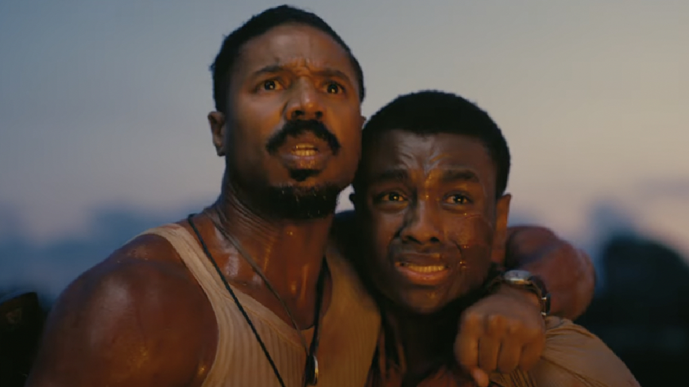

Date de sortie : 2025
Réalisateur : Ryan Coogler
Genre : Thriller surnaturel, Drame
Acteurs principaux : Michael B. Jordan, Miles Canton
Note globale : 4.5/5
Le film a beaucoup de qualités : visuel, jeu des acteurs, scénario et effets spéciaux. Une vraie expérience à voir sur grand écran.
⚠️ Attention : Cette critique contient des spoilers sur le film Sinners ⚠️
Un voyage dans le temps poignant et saisissant
Quand le film commence, on est plongé dans une époque où l'esclavage n'est plus aussi omniprésent qu'auparavant, mais ses cicatrices restent bien visibles. Cette immersion dans l'Amérique des années 1930, durant la Prohibition, est frappante. L'une des forces de Sinners est la manière dont il réussit à mêler les aspects surnaturels à une époque réelle et poignante.
Le film nous transporte dans un contexte historique lourd, tout en nous offrant une touche surnaturelle qui renforce l'horreur et la tension. Les jumeaux Elijah et Elias, incarnés par Michael B. Jordan, sont pris dans un tourbillon d'événements surnaturels qui marquent une véritable rupture avec leur réalité. Leurs personnages sont saisissants et nous offrent des moments de tension intenses.
Une performance exceptionnelle de Michael B. Jordan
Michael B. Jordan brille dans le rôle des jumeaux. Il incarne avec brio deux personnages différents tout en leur insufflant une grande profondeur émotionnelle. La manière dont il parvient à nous transmettre les luttes internes de ses personnages, pris entre rédemption et héritage, est remarquable. Son jeu d'acteur est l'un des principaux atouts du film, car il réussit à transmettre toute la complexité des jumeaux Elijah et Elias, chacun ayant une personnalité et des dilemmes bien distincts, mais qui finissent par se rencontrer dans une dynamique puissante.
Quant à Miles Canton, sa performance n'est pas en reste. Il apporte une véritable richesse au film, créant des moments de complicité et de tension avec Michael B. Jordan. Les deux acteurs réussissent à s'impliquer totalement dans leurs rôles, et ça se ressent à l'écran. Canton offre une profondeur à son personnage qui le rend complémentaire à l'arc narratif de Jordan, les deux acteurs étant capables de jouer sur des registres émotionnels très variés.
Un scénario solide, mais une fin un peu trop facile
Le scénario de Sinners sait captiver dès le départ. La tension est palpable tout au long du film, soutenue par des flashbacks qui nous rappellent les événements précédents (même si, parfois, cela peut être un peu redondant). Les événements surnaturels se tissent progressivement, et le spectateur est tenu en haleine à chaque scène. Les moments d'intensité sont bien dosés, et chaque twist dans le récit accroît la tension générale du film, rendant chaque scène plus imprévisible et palpitante.
Cependant, la fin du film est, à mon sens, une petite déception. Bien que satisfaisante sur le fond, elle s'appuie sur une facilité scénaristique qui enlève un peu de la puissance qu'on attendait. La résolution, bien qu'efficace, utilise un peu trop de raccourcis narratifs pour conclure une histoire riche. Cela dit, cela n'enlève rien à la qualité globale du film, qui reste une très belle expérience cinématographique. La fin peut sembler décevante pour ceux qui s'attendaient à une conclusion plus percutante, mais elle n'empêche pas d'apprécier l'ensemble du film.
Des musiques exceptionnelles qui servent le récit
La bande-son de Sinners est un autre point fort. Elle mélange des éléments modernes et futuristes tout en gardant une touche du passé, parfaitement en adéquation avec l'atmosphère du film. Les musiques amplifient la tension et le danger qui planent sur les personnages, notamment dans les scènes impliquant les vampires. Elles ajoutent une dimension supplémentaire au film, renforçant l'immersion du spectateur. La bande-son oscille entre des morceaux d'époque, qui ancrent le film dans son contexte historique, et des morceaux plus modernes, qui accentuent le côté surnaturel et inquiétant des événements.
Une expérience cinématographique complète
Ce film n'est pas seulement un thriller ; c'est une véritable expérience. L'énorme travail sur la tension, l'atmosphère et la mise en scène en fait une œuvre à vivre sur grand écran. La direction artistique s'attache à magnifier chaque scène, qu'elle soit de pure action ou d'introspection. Et il y a aussi des moments d'humour, mais surtout des moments gênants, comme cette scène sexuelle qui se termine dans une explosion de sang (salut le vampire !), ajoutant encore à l'aspect imprévisible du film. Ce genre de scènes bouscule les attentes du spectateur, le maintenant sur le qui-vive.
La fin laisse une ouverture intéressante pour une suite, et je ne peux m'empêcher de penser que ce film marque le début d'une nouvelle ère pour le cinéma en 2025. Après un petit loupé avec Black Panther 2, Ryan Coogler revient en grande forme, offrant un film audacieux et riche. Cette œuvre se distingue par sa capacité à marier des éléments historiques, surnaturels et modernes, tout en étant servie par un casting exceptionnel. La réussite de ce film réside dans sa capacité à mêler plusieurs genres tout en gardant une cohérence narrative et visuelle qui en fait une expérience riche et surprenante.

Conclusion
En résumé, Sinners est un très bon film. Il réussit à allier un fond historique intéressant à une dimension surnaturelle fascinante. Les performances des acteurs sont impressionnantes, et la mise en scène, bien que parfois redondante, tient le spectateur en haleine. Malgré une fin un peu trop facile, c'est un 9/10 bien mérité pour ce film qui s'impose comme une expérience à vivre. La manière dont le film est construit, avec ses touches surnaturelles et historiques, en fait un excellent choix pour les amateurs de thrillers qui aiment une touche de fantastique et d'histoire.
➡️ À lire aussi : Robot Sauvage, l'âme d'une machine !